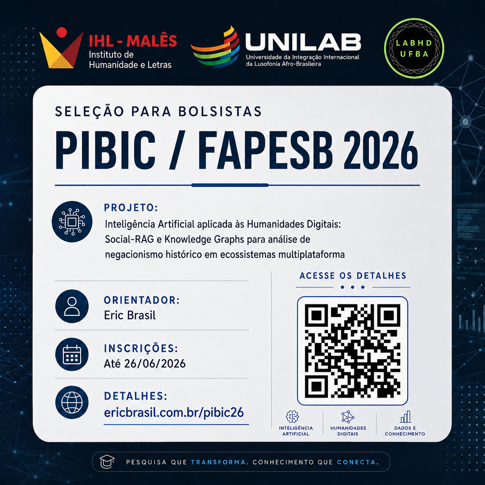

Chamada para Seleção de Bolsista PIBIC/FAPESB — Edital PROPPG 08/2026
Projeto: Inteligência Artificial aplicada às Humanidades Digitais: Social-RAG e Knowledge Graphs para análise de negacionismo histórico em ecossistemas multiplataforma
![]()

1 Informações Gerais
A Coordenação do projeto de pesquisa PVM2451-2026 — “Inteligência Artificial aplicada às Humanidades Digitais: Social-RAG e Knowledge Graphs para análise de negacionismo histórico em ecossistemas multiplataforma” convida estudantes de graduação do Instituto de Humanidades e Letras da UNILAB a se candidatarem a 1 (uma) vaga de bolsista de Iniciação Científica no âmbito do Edital PROPPG nº 08/2026 — PIBIC/FAPESB.
O projeto foi aprovado com cotas de bolsa FAPESB. A presente chamada refere-se ao plano de trabalho:
Curadoria de corpus e análise de negacionismo histórico no ecossistema Telegram-YouTube com Social-RAG
Título do Projeto: Inteligência Artificial aplicada às Humanidades Digitais: Social-RAG e Knowledge Graphs para análise de negacionismo histórico em ecossistemas multiplataforma
Modalidade: PIBIC/FAPESB
Vigência: 01/10/2026 a 30/09/2027
Valor da bolsa: R$ 700,00/mês
Carga horária: 20h semanais
Orientador: Prof. Eric Brasil Nepomuceno (IHL/UNILAB)
Laboratórios envolvidos: IHL/UNILAB (Malês) e LABHDUFBA (UFBA)
Financiamento: Projeto vinculado ao edital CNPq/Decit/SECTICS/MS nº 30/2024 — Eixo I: Gestão da Infodemia (Processo 442958/2024-2)
Clique aqui para acessar o projeto de pesquisa completo.
Clique aqui para acessar o plano de trabalho.
2 Requisitos para a candidatura
- Estar regularmente matriculado(a) em curso de graduação do Instituto de Humanidades e Letras da UNILAB, no campus da Bahia (requisito da modalidade PIBIC/FAPESB).
- Ter coeficiente de rendimento acadêmico (CRA) ≥ 7,0.
- Não ter vínculo empregatício nem outra bolsa acadêmica (exceto auxílios estudantis como PNAES).
- Dedicar 20 horas semanais às atividades da pesquisa.
- Disponibilidade para reuniões presenciais quinzenais em Salvador (LABHDUFBA/UFBA) — obrigatório.
- Desenvolver o Trabalho de Conclusão de Curso (TCC) vinculado à pesquisa, sob orientação do Prof. Eric Brasil.
- Compromisso com a realização de trabalho em equipe, com supervisão direta do orientador e interação com mestrandos e doutorandos vinculados ao projeto.
- Currículo Lattes cadastrado e atualizado no ano de 2026.
- Cadastro como Pesquisador FAPESB (siga.fapesb.ba.gov.br) e no SEI Bahia, em caso de seleção.
3 Perfil esperado
Buscamos estudantes proativos, abertos a aprender e dispostos a trabalhar em equipe. A pesquisa é interdisciplinar e envolve tanto análise crítica de fontes historiográficas quanto ferramentas computacionais. A supervisão das atividades da pesquisa conta com mestrandos e doutorandos vinculados ao projeto, o que exige colaboração e capacidade de aprender com pares mais experientes.
- Interesse em ferramentas e métodos digitais aplicados às humanidades e ciências sociais.
- Proatividade na busca por soluções e no autodidatismo guiado.
- Abertura para aprender métodos e ferramentas novas, mesmo fora da área de formação.
- Capacidade de trabalho em equipe multidisciplinar, com supervisão de mestrandos e doutorandos.
- Compromisso com prazos e demandas regulares.
- Responsabilidade no tratamento de dados públicos digitais, seguindo protocolos éticos e LGPD.
- Respeito, empatia e tolerância.
Preferencialmente:
- Conhecimento básico de Python ou outra linguagem de programação.
- Inglês instrumental para leitura de literatura.
- Estar cursando História ou Ciências Sociais.
4 Processo de Seleção
Etapa 1 (eliminatória): Análise de documentos:
- carta de interesse,
- histórico escolar,
- currículo Lattes atualizado
Etapa 2 (classificatória): Entrevista online (Google Meet) com o orientador e membros da equipe de pesquisa. A entrevista avaliará:
- Motivação e disponibilidade real para a carga horária exigida.
- Perfil colaborativo e abertura para aprender.
- Adequação ao perfil do plano de trabalho.
- Capacidade de trabalhar sob supervisão de mestrandos e doutorandos.
- Compromisso com prazos e demandas regulares.
- Concordar em assinar termo de confidencialidade da pesquisa, caso selecionado(a).
5 Cronograma
- Abertura da chamada: 19/06/2026
- Inscrições: até 26/06/2026, 23h59
- Enviar os seguintes documentos para profericbrasil@unilab.edu.br:
- Carta de interesse (em um dos seguintes formatos: .md, .txt, .odt ou .pdf): explicando motivação, afinidade e disponibilidade de participar da pesquisa
- Histórico escolar (PDF)
- Currículo Lattes atualizado (PDF)
- Enviar os seguintes documentos para profericbrasil@unilab.edu.br:
- Resultado da 1ª fase (eliminatória): enviado por email até 29/06/2026, até 18h
- Entrevistas: Data a ser divulgada após a 1ª fase (via Google Meet; horários a definir conforme número de classificados)
- Resultado final: A ser divulgado após as entrevistas
- Entrega da documentação completa para implementação da bolsa (conforme edital institucional): 29/06 a 14/07/2026
6 Detalhes do Plano de Trabalho
7 Informações sobre a modalidade PIBIC/FAPESB
A bolsa PIBIC/FAPESB é fomentada pela Fundação de Amparo à Pesquisa do Estado da Bahia (FAPESB) e destina-se a estudantes de graduação cursando no estado da Bahia. Os requisitos específicos da modalidade incluem:
- Estar regularmente matriculado(a) e cursando graduação no estado da Bahia.
- Cadastro como Pesquisador FAPESB (siga.fapesb.ba.gov.br).
- Cadastro no SEI Bahia.
- Conta corrente no Banco do Brasil (para depósito da bolsa).
- Currículo Lattes atualizado no ano da implementação da bolsa.
- Não acumular outra bolsa de mesmo nível financiada com recursos públicos durante a vigência (bolsas de mestrado e doutorado são de nível diferente e não configuram acumulação vedada, conforme Resolução FAPESB nº 002/2025, art. 18.1).
- Entregar relatório parcial (01/04/2027) e relatório final (01/10/2027) via SIGAA.
- Apresentar os resultados da pesquisa no Evento de Iniciação Científica da UNILAB.
Para dúvidas: profericbrasil@unilab.edu.br